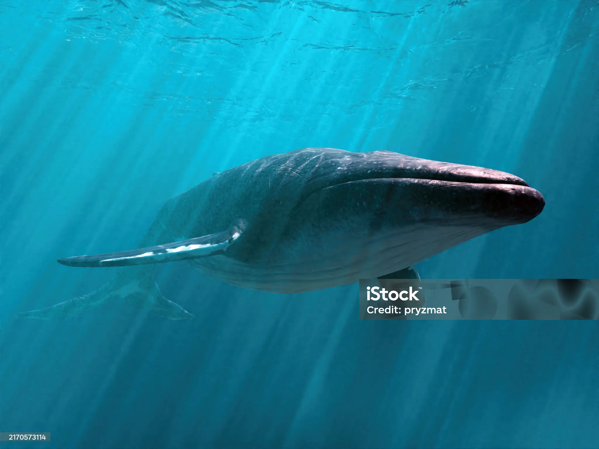
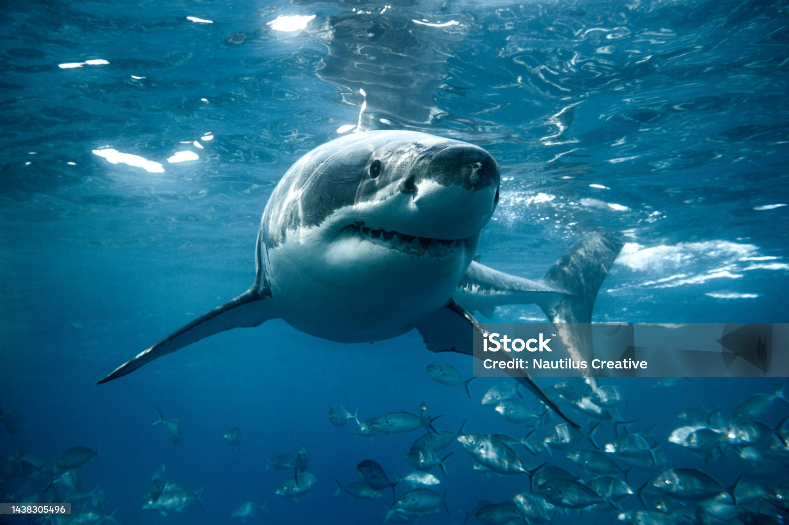

الحوت الأزرق - أكبر كائن حي على وجه الأرض، يعيش في أعماق البحار.

أسماك المرجانية أو أسماك الشعاب المرجانية هي مجموعة الأسماك التي تعيش عادة في الجرف البحري قليل العمق وتألف العيش وسط الشعب المرجانية ولهذا السبب أخذت اسمها من اسمه.

يعد السمك القرش أحد أنواع الأسماك الغضروفية، والتي تكون مفترسة عادة، وتُشبه أسماك القرش الأسماك العادية في شكلها المغزلي لجسمها، وموقع الخياشيم الموجودة على جانبي الرأس، ولكنها تمتلك جلداً قاسياً وخشن لونه رمادي فاتح، وزعانف مدببة